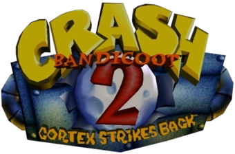

Crash Bandicoot 2: Cortex Strikes Back
Crash Bandicoot 2: Cortex Strikes Back es un videojuego de plataformas desarrollado por el estudio Naughty Dog para PlayStation. Fue lanzado a la venta por primera vez el 31 de octubre de 1997 en Estados Unidos, para posteriormente llegar a Europa y Japón en diciembre del mismo año.
Argumento
Modos de juego
Este videojuego lleva a Crash a través de 35 niveles respartidos en 6 cámaras: 25 normales, 5 secretos y 5 jefes de cámara. Los 5 jefes son Riper Roo, Los hermanos Komodo Joe y Moe, Tiny Tiger, Dr. N. Gin y Dr. Neo Cortex (hay un sexto jefe, Bearminator, que no aparece como jefe de cámara, sino en un nivel normal). En cada nivel normal se puede conseguir 1 cristal y, como mínimo, en todos, 1 gema. El cristal está perdido en el nivel, mientras que para conseguir la gema que sí está en todos los niveles tienes que coger todas las cajas. En algunos niveles se puede conseguir otra gema o una de color (rojo, azul, verde, amarillo y violeta) para conseguir las 42 gemas. La mayoría de ellos se consiguen haciendo una contrarreloj, warp room secreto, invencible hasta cierto sitio y alguna necesitas una gema de color. Todos los niveles normales tienen un subnivel Bonus y muchos de ellos subniveles secretos de gemas. Hay 5 cámaras del tiempo, cada una con su espacio para guardar la partida, superpuestos verticalmente y unidos por un ascensor que se desbloquea al reunir los cinco cristales de los niveles de la cámara del tiempo. Existe una cámara secreta que conduce a los 5 niveles secretos, pero éstos están bloqueados al comenzar. El objetivo es reunir todas las gemas y los cristales repartidos por los niveles. Por el camino puedes recoger frutas wumpa, con cada 100 recibes una vida extra y mascaras aku-aku, las cuales te otorgan protección contra enemigos menores.